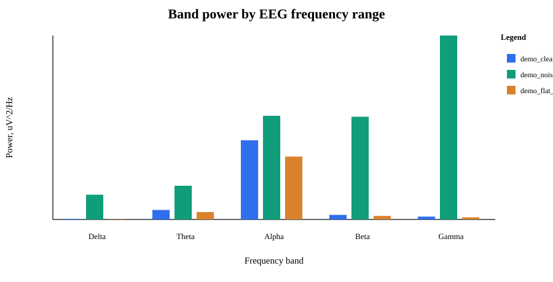
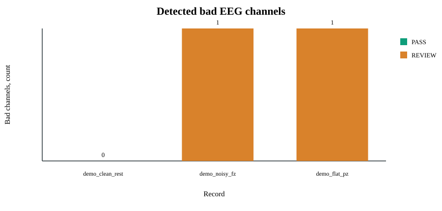

Отчёт сформирован минимальным прототипом QC для проверки структуры результатов, расчёта метрик сигнала и подготовки материалов для практики.
Источник данных: синтетические EEG-подобные записи, сгенерированные модулем qc_eeg.metrics.
| record_id | scenario | duration_sec | sfreq_hz | n_channels | n_bad_channels | bad_channels | mean_amplitude_uv | alpha_beta_ratio | qc_status |
|---|---|---|---|---|---|---|---|---|---|
| demo_clean_rest | Rest | 12 | 250 | 5 | 0 | 12.68 | 17.26 | PASS | |
| demo_noisy_fz | Rest | 12 | 250 | 5 | 1 | Fz | 25.3 | 1.009 | REVIEW |
| demo_flat_pz | Rest | 12 | 250 | 5 | 1 | Pz | 10.1 | 17.67 | REVIEW |
Источник данных: демонстрационный запуск CLI на clean/noisy/flat сценариях.
| check | source_data | expected | actual | status |
|---|---|---|---|---|
| Clean record keeps PASS status | demo_clean_rest | PASS | PASS | PASS |
| Noisy Fz record is flagged | demo_noisy_fz | Fz in bad_channels | Fz | PASS |
| Flat Pz record is flagged | demo_flat_pz | Pz in bad_channels | Pz | PASS |
Оси: X - диапазон частот, Y - мощность. Легенда показывает записи.

Оси: X - запись, Y - число каналов. Цвет отражает итоговый QC-статус.
